2026
それは川だったか、用水路だったか
Was it River,or Was it an Irrigation Canal?
仕事で子供と話す機会があった。
子供と話している時、その子と同じくらいだった頃の自分の記憶を遡ってみたりした。
その記憶の映像はなんとも言葉にしづらい、ぐにゃぐにゃとしていたり、モヤモヤしていたり、人が登場しても顔が見えてこなかったり、だけど嬉しかったり悲しかったり、そんなものが脳内に映し出される。
ということは、目の前にいる、私の名前を呼んでいる、この子が大きくなったとき、今の私はぐにゃぐにゃとしていたり、もやもやしていたり、顔がなかったりするのだろう。
ただ、今、目の前にいる子は、きっとはっきりと僕をみている。目から伝達され脳に映し出されている映像もはっきりとしていることだろう。
これは何なのだろうか。この子の記憶において私とは何なのだろうか。
私の記憶において、あの思い出せない誰か、景色は何なのだろうか。
今私はこの子の前にいるのかいないのか。
実感がない。
このぐにゃぐにゃしている映像は、もう思い出すこともできない些細な映像は、見なかったことと同じなのだろうか。
そこにいた私は、今の私になにをもたらしているのだろうか。
I had an opportunity to talk with a child through my work.
While speaking with the child, I tried to trace back my own memories from around the time I was their age.
The images of those memories are difficult to put into words: they are squishy, blurry, sometimes people appear without faces, yet there are feelings of happiness or sadness. Such images are projected in my mind.
If that is the case, then when this child—who is now in front of me, calling my name—grows up, perhaps I, as I am now, will also become squishy, blurry, faceless in their memory.
And yet, the child standing before me now is surely seeing me clearly. The images transmitted through their eyes and projected into their brain must be vivid.
What is this?
Who am I within this child’s memory?
And within my own memory, what are those unrecallable people and landscapes?
Am I here in front of this child, or am I not?
I have no real sense of it.
Are these squishy images—these trivial images that can no longer be recalled—no different from things that were never seen at all?
What has the version of myself that was once there brought to who I am now?

”昨日の植物３”/2025/oil on canvas/1000mm×830㎜
©KUROSAKA HINA "Yesterday Plants 3"/2025/oil on canvas/1000mm×830㎜
©KUROSAKA HINA
©KUROSAKA HINA "Yesterday Plants 3"/2025/oil on canvas/1000mm×830㎜
©KUROSAKA HINA
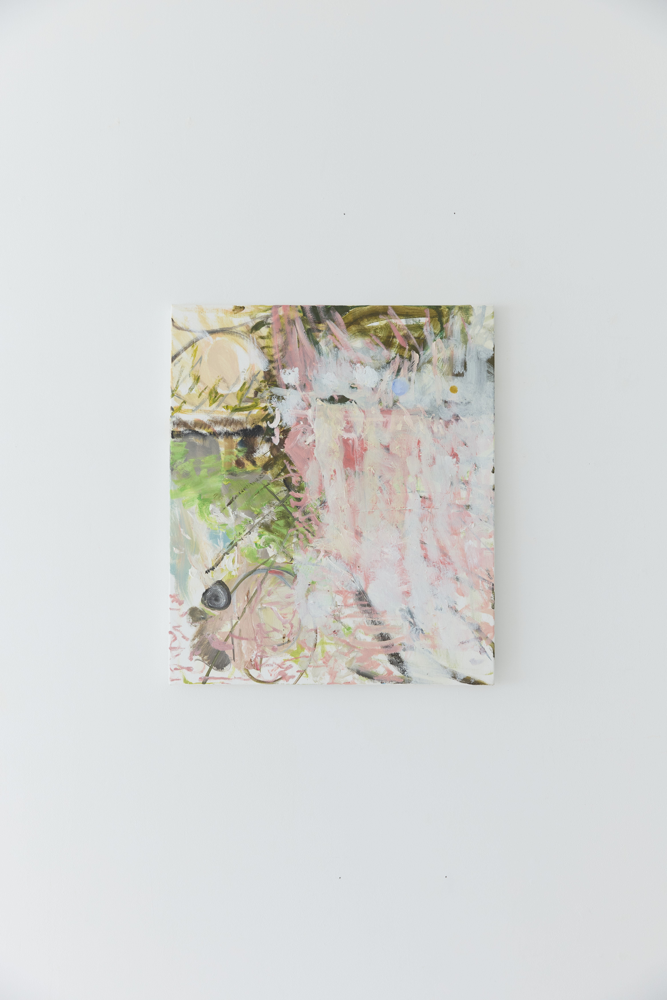
”階段”/2025/oil on canvas/530mm×455㎜
©KUROSAKA HINA "Stairs"/2025/oil on canvas/530mm×455㎜
©KUROSAKA HINA
©KUROSAKA HINA "Stairs"/2025/oil on canvas/530mm×455㎜
©KUROSAKA HINA

展示風景
©KOHEY KANNO Installation view
©KOHEY KANNO
©KOHEY KANNO Installation view
©KOHEY KANNO

展示風景
©KOHEY KANNO Installation view
©KOHEY KANNO
©KOHEY KANNO Installation view
©KOHEY KANNO
2025
わたしの髪は自由にゆれる、ごくごくと水を飲むように
My hair sways freely, just as I drink water in big gulps
部屋には様々なモノが置かれている。
そのすべてのモノには役割があったりなかったりする。
見慣れた部屋に置いてあるモノたちは、確かに私の網膜に写っているのだが、記憶されない事が多い気がする。
しかし、時々ピントがあったりする。
普段は気にならなかった机の傷。目をつぶっていても座れる、いつもの場所にある椅子。
窓からみえる、通りを挟んだ先にあるマンションの壁の色。
そして壁にかかっている絵画。
There are all sorts of things in the room.
Some of them serve a purpose; others do not.
The objects in this familiar room are certainly visible to my eyes, but I often feel they don’t stick in my memory.
Yet, every now and then, something comes into focus.
A scratch on the desk I usually don’t notice. The chair in its usual spot, where I could sit even with my eyes closed.
The color of the apartment building’s wall across the street, visible through the window.
And the painting hanging on the wall.
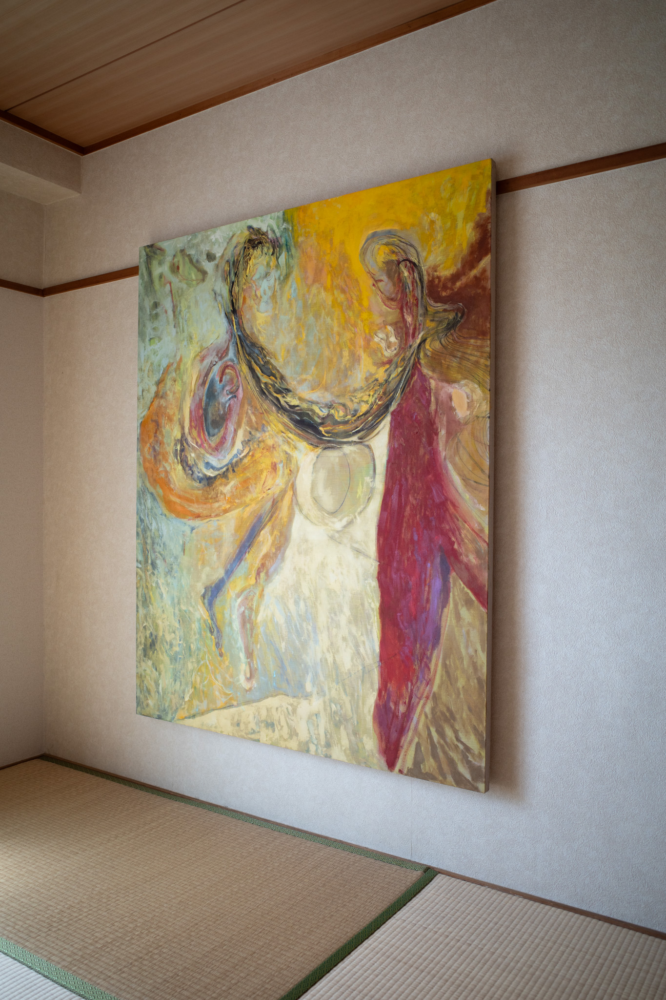
朝日/2024/oil on canvas/1620×1303mm
©︎HIROYA HAMAIBA Sunrise/2024/oil on canvas/1620×1303mm
©︎HIROYA HAMAIBA
©︎HIROYA HAMAIBA Sunrise/2024/oil on canvas/1620×1303mm
©︎HIROYA HAMAIBA
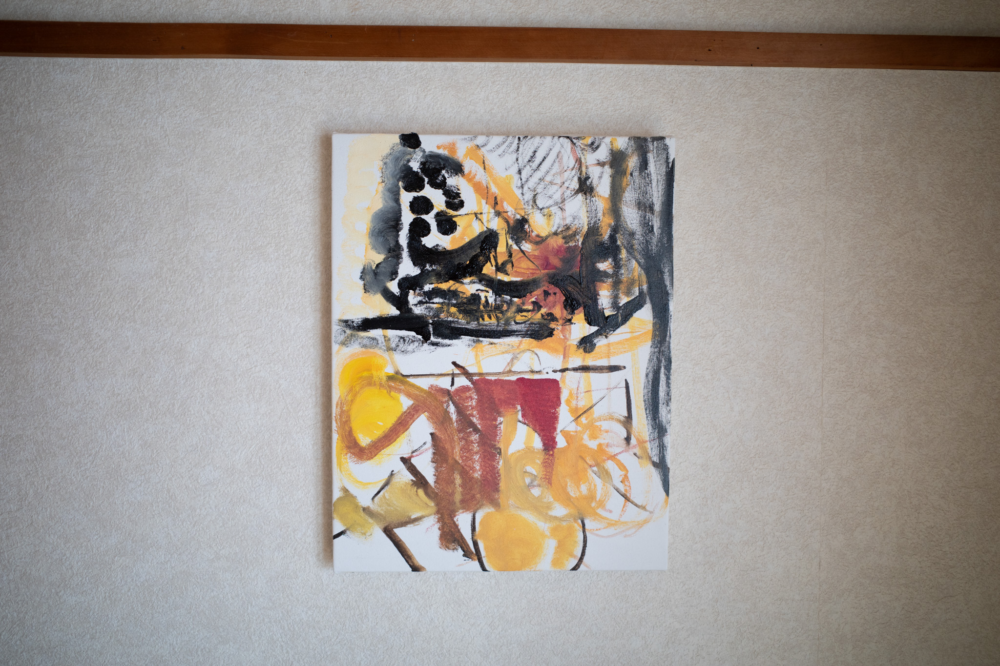
時計/2025/oil on canvas/410×138mm
©︎HIROYA HAMAIBA Clock/2025/oil on canvas/410×138mm
©︎HIROYA HAMAIBA
©︎HIROYA HAMAIBA Clock/2025/oil on canvas/410×138mm
©︎HIROYA HAMAIBA
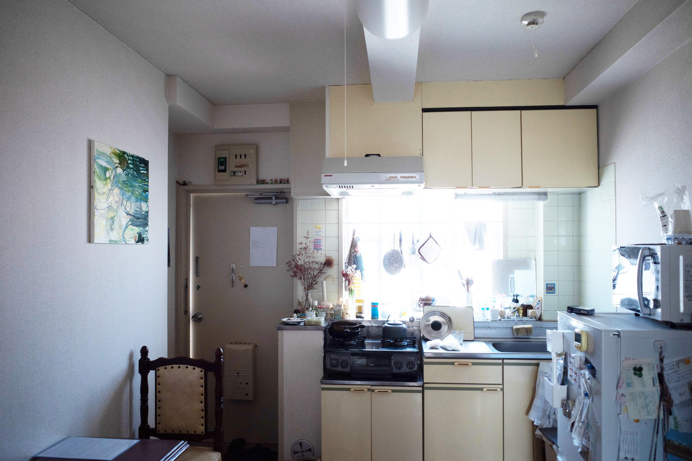
展示風景
©︎HIROYA HAMAIBA Installation view
©︎HIROYA HAMAIBA
©︎HIROYA HAMAIBA Installation view
©︎HIROYA HAMAIBA
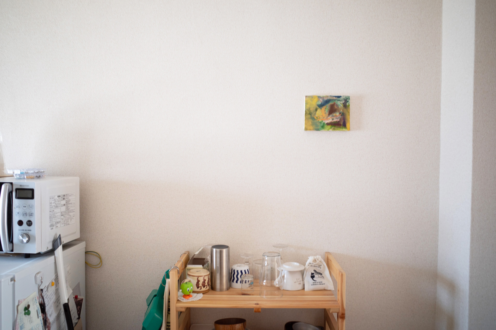
展示風景
©︎HIROYA HAMAIBA Installation view
©︎HIROYA HAMAIBA
©︎HIROYA HAMAIBA Installation view
©︎HIROYA HAMAIBA
点滅
TENMETSU
点滅（現・ノン）は、アーティスト 松岡はる によって企画された、東京・吉祥寺を舞台とするアートイベントである。
一夜限りのイベントとして、ハモニカ横丁を中心に街のさまざまな場所で、参加アーティストによる展示やパフォーマンスが展開される。
現在は「ノン」へと名称を変更し、活動を継続している。
"Tenmetu" (now known as "Non") is an art event set in Kichijoji, Tokyo, conceived by artist Haru Matsuoka.
As a one-night-only event, exhibitions and performances by participating artists take place at various locations throughout the neighborhood, centered around Harmonica Yokocho.
The event has since been renamed "Non" and continues to operate under that name.
参加作家
井口美尚、石田裕己、小西善仁、藤本紗帆、松岡はる、森椋平 Artists
Minao Iguchi, Yuki Ishida, Yoshihito Konishi, Saho Fujimoto, Haru Matsuoka, Ryohei Mori
井口美尚、石田裕己、小西善仁、藤本紗帆、松岡はる、森椋平 Artists
Minao Iguchi, Yuki Ishida, Yoshihito Konishi, Saho Fujimoto, Haru Matsuoka, Ryohei Mori
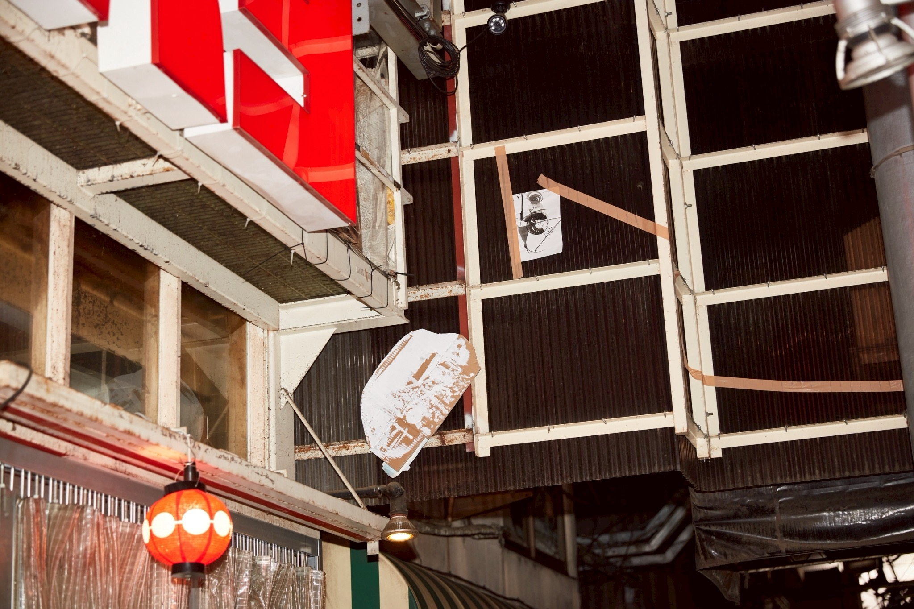
展示風景
©KUROSAKA HINA Installation View
©KUROSAKA HINA
©KUROSAKA HINA Installation View
©KUROSAKA HINA
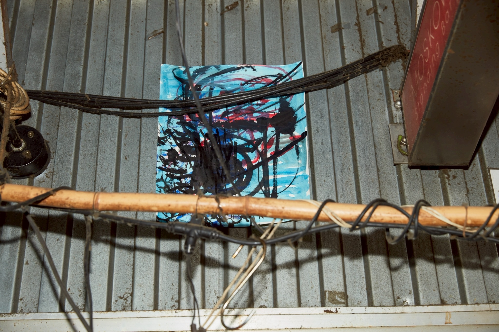
展示風景
©KUROSAKA HINA Installation View
©KUROSAKA HINA
©KUROSAKA HINA Installation View
©KUROSAKA HINA
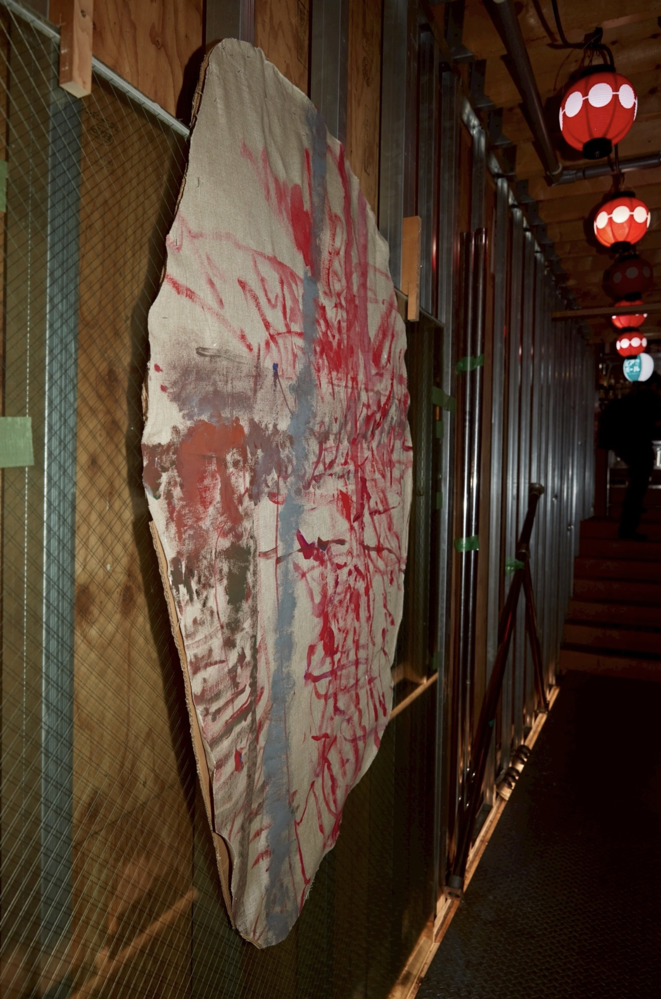
展示風景
©KUROSAKA HINA Installation View
©KUROSAKA HINA
©KUROSAKA HINA Installation View
©KUROSAKA HINA
.JPG)
展示風景
©KUROSAKA HINA Installation View
©KUROSAKA HINA
©KUROSAKA HINA Installation View
©KUROSAKA HINA
2024年度多摩美術大学美術学部卒業制作展
Tama Art University Faculty of Fine Arts 2024 Graduation Exhibition
なんとなく散歩に出た時に目が止まった。
何かが気になったとかそういう類のものではない。
目を動かすことができない。
初めは枝にくっついてる枯葉の重なったところを見た。そしていつのまにか、枯葉の後ろに垂れ下がる植物の蔦を見ていることに気づく。
5秒たった。
と思ったら蔦の後ろの石垣に埋まっている、水か何かを流すためのパイプを見ていた。
また少し時間が経った。
この数秒間の間、視線はくるくると回転するように"それら"を見ていた。素晴らしいからとか、気持ちが悪いからとか、感動しているからとかそんな感情の動きはなかった。
しかし、時間をかけて確かに見ていた。これはとても豊かな時間であると思う。
この時の、数秒間を忘れないための制作をしたい。
I happened to stop and look while out on a walk.
It was not that something in particular caught my attention.
Rather, I found myself unable to move my eyes away.
At first, I was looking at a cluster of dead leaves caught on a branch.
Before I realized it, my gaze had shifted to a vine hanging behind them.
Five seconds passed.
Then I noticed that I was looking at a pipe embedded in a stone wall behind the vine, perhaps used to carry water.
A little more time passed.
During those few seconds, my gaze moved in circles among these things.
I was not moved by beauty, disgust, or awe.
There was no particular emotion attached to what I was seeing.
And yet, I was undeniably looking.
I spent time with these things.
I believe this was a remarkably rich moment.
I want to make work that preserves those few seconds.

”住処の日々 他者の日々”/2024/oil on canvas/2000mm×7000㎜
©︎YASUNORI TANIOKA ”Days of a Dwelling, Days of Others”/2024/oil on canvas/2000mm×7000㎜
©︎YASUNORI TANIOKA
©︎YASUNORI TANIOKA ”Days of a Dwelling, Days of Others”/2024/oil on canvas/2000mm×7000㎜
©︎YASUNORI TANIOKA

”回転”/2024/oil on canvas/410mm×380㎜
©︎YASUNORI TANIOKA ”Turning”/2024/oil on canvas/410mm×380㎜
©︎YASUNORI TANIOKA
©︎YASUNORI TANIOKA ”Turning”/2024/oil on canvas/410mm×380㎜
©︎YASUNORI TANIOKA
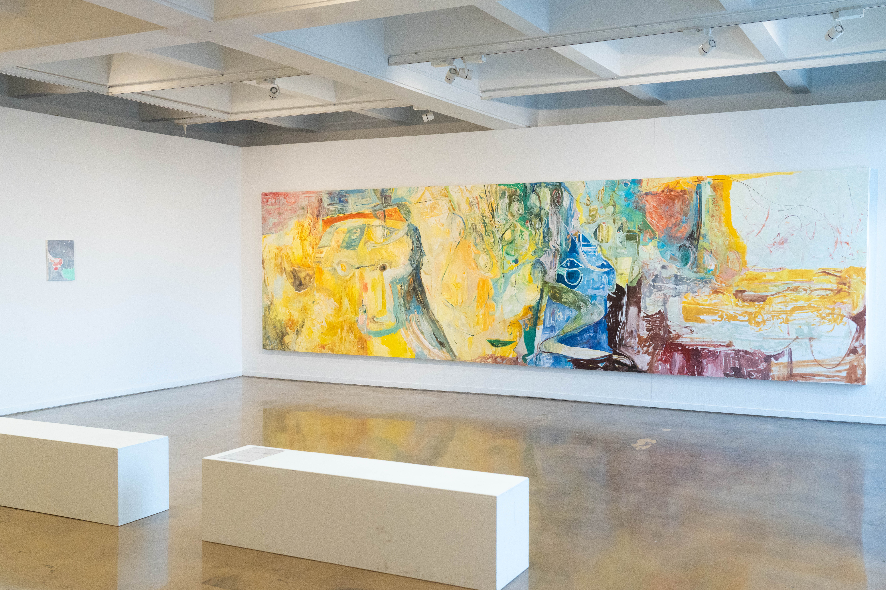
展示風景
©︎KEIMA KONDO Installation View
©KEIMA KONDOO
©︎KEIMA KONDO Installation View
©KEIMA KONDOO
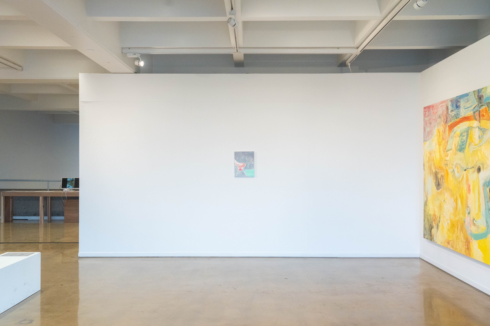
展示風景
©︎KEIMA KONDO Installation View
©KEIMA KONDOO
©︎KEIMA KONDO Installation View
©KEIMA KONDOO
News
About
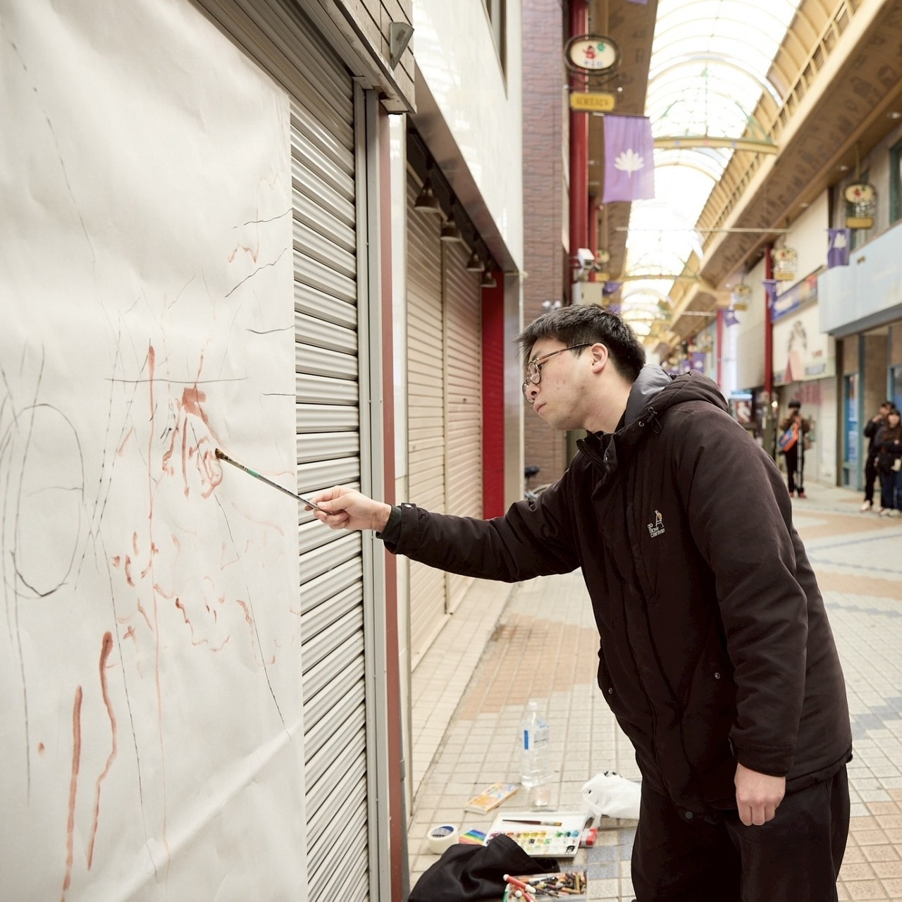
森椋平は日本を拠点に活動するアーティスト。 Ryohei Mori is an artist based in Japan.
2001年千葉県生まれ、千葉県在住。 忘れていくこと、見るということ、記憶されないことをテーマに、絵画やドローイングを中心に制作を行っている。 Born in 2001 in Chiba, Japan, and currently based in Chiba. The artist works primarily in painting and drawing, exploring forgetting, seeing, and what is not retained in memory.
Contact
ryoheimori_0718@gmail.com